Materials
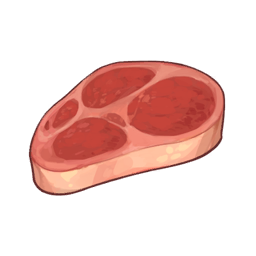Raw Meat
Raw Meat
Food and Potions
Cooking Ingredient
A fresh chunk of meat. Handled properly, it can be used to make delicious food.
Sources:
Dropped by animals
Used by food:
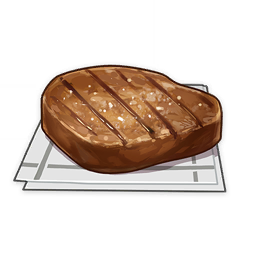
Steak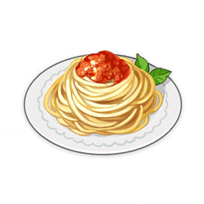
Flaming Red Bolognese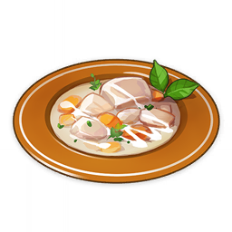
Cream Stew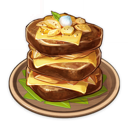
"Pile 'Em Up"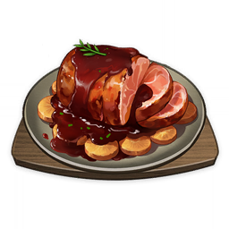
Sticky Honey Roast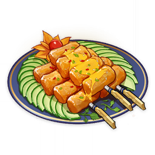
Zhongyuan Chop Suey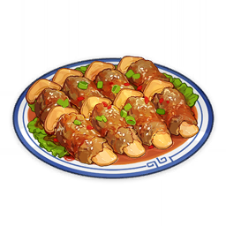
Matsutake Meat Rolls
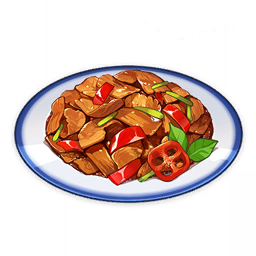
Stir-Fried Filet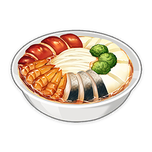
Come and Get It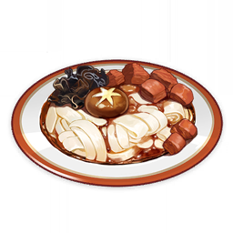
Noodles with Mountain Delicacies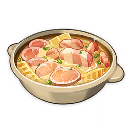
Bamboo Shoot Soup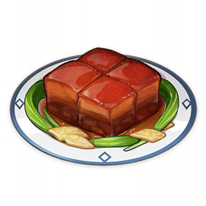
Tianshu Meat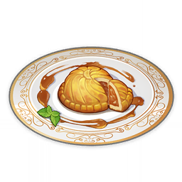
Moon Pie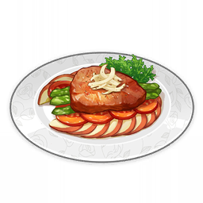
Northern Apple Stew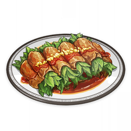
Minty Meat Rolls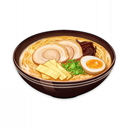
Tonkotsu Ramen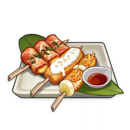
Tri-Flavored Skewer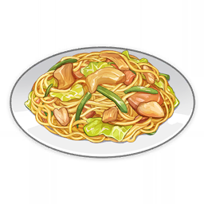
Mixed YakisobaInvigorating Kitty Meal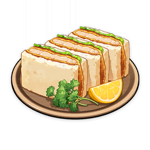
Katsu Sandwich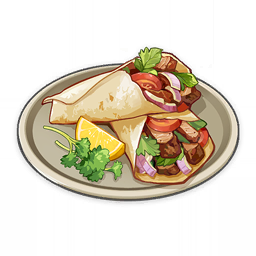
Shawarma Wrap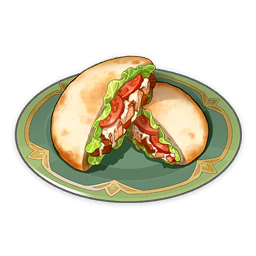
Pita Pocket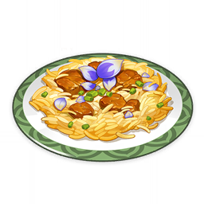
BiryaniSamosa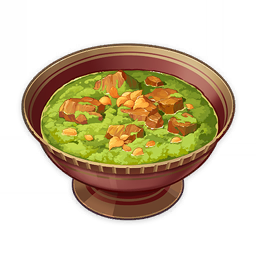
Sabz Meat Stew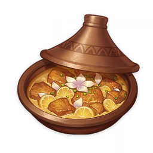
Gilded Tajine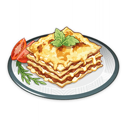
Lasagna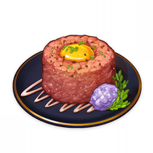
Steak Tartare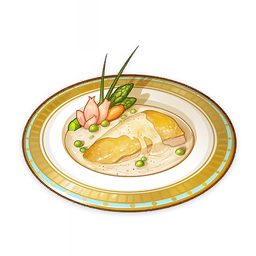
Vessie Chicken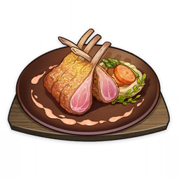
Barbeque Ribs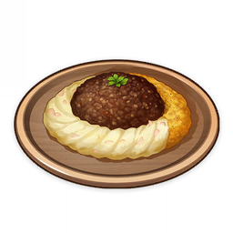
Haggis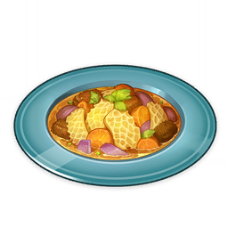
Tripes du Port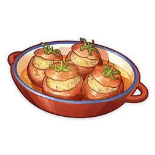
Tomates Narbonnaises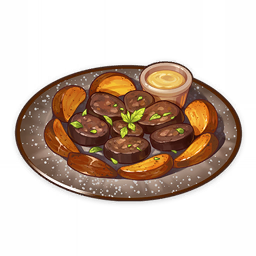
Boudin Noir aux Pommes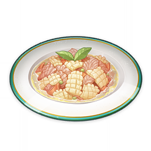
Deep-Fried Doublecrisp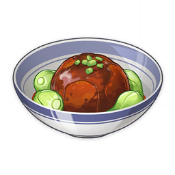
Braised Meatball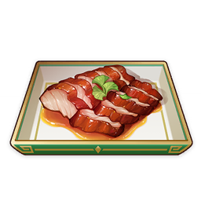
Honey Char Siu
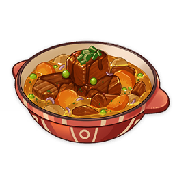
Braised Meat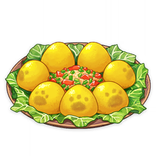
Chili-Mince Cornbread Buns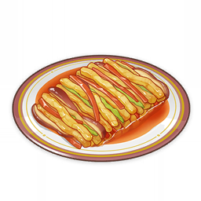
Trembling Strings and Rushing Reeds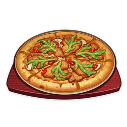
Meat Lovers' Mushroom Pizza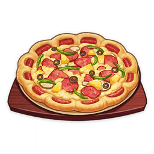
Super Magnificent PizzaDescription:
A fresh chunk of meat. Handled properly, it can be used to make delicious food.
All kinds of creatures roam the vast lands of Teyvat, some of which have become sources of nutrition for humans. It is said that in the distant past, there existed a species of animal so large that it could feed an entire city for a year.